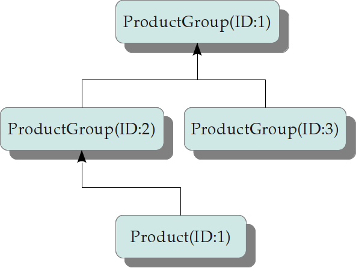

When it comes to representing tree-like structures in a relational database there are several ways possible. One of possible ways to do this is the following:
all nodes of a tree are stored in a single table;
each node has got a link column referencing the parent node;
you need to control the hierarchy to avoid cycles.
In the data schema below there is an hierarchy of product groups and products.
<schema> <table name="tbl_product_group" sequence="seq_prod_group" class="ProductGroup" xml-name="product-group"> <column name="id" type="longint"> <primary-key /> </column> <column name="parent_id" type="longint"> <foreign-key table="tbl_product_group"/> </column> <column name="name" type="string" size="100" null="false" /> </table> <table name="tbl_product" sequence="seq_prod_group" class="Product" xml-name="product"> <column name="id" type="longint"> <primary-key /> </column> <column name="parent_id" type="longint"> <foreign-key table="tbl_product_group"/> </column> <column name="name" type="string" size="100" null="false" /> <column name="price" type="decimal" null="false" /> </table> <relation type="one-to-many" cascade="delete"> <one class="ProductGroup" property="children" /> <many class="ProductGroup" property="parent" /> </relation> <relation type="one-to-many" cascade="delete"> <one class="ProductGroup" property="products" /> <many class="Product" property="parent" /> </relation> </schema>
Note, that table tbl_product_group is referenced by itself via a foreign key. Also, in relation description there is the same class name on both sides of the relation.
On a node deletion request, in case the nodes has got child nodes, there are several ways of how to keep the database consistent:
deny the deletion of the parent node if there are any nodes referencing it;
delete child nodes too (cascade deletion), so that there are no dangling references;
keep child nodes, but nullify their referencing columns.
As a rule, the default behaviour is the number 1. To allow the cascade deletion of referencing nodes we set the attribute cascade of corresponding relation to value delete.
The following code sample creates a tree consisting of four nodes:
Session session(Yb::theSchema::instance(), &engine);
ProductGroup::Holder pg1(session);
pg1->name = "Group1";
ProductGroup::Holder pg2(session);
pg2->name = "Group2";
pg2->parent = pg1;
ProductGroup::Holder pg3(session);
pg3->name = "Group3";
pg3->parent = pg1;
Product::Holder pr1(session);
pr1->name = "Product1";
pr1->price = Decimal("1.00");
pr1->parent = pg2;
session.commit();
root = pg1->id;Session log, SQLITE dialect is in use:
orm: flush started sql: begin transaction sql: prepare: INSERT INTO tbl_product_group (parent_id, name) VALUES (?, ?) sql: bind: (LongInt, String) sql: exec prepared: p1="NULL" p2="'Group1'" sql: prepare: SELECT SEQ LID FROM SQLITE_SEQUENCE WHERE NAME = 'tbl_product_group' sql: exec prepared: sql: fetch: LID='1' sql: fetch: no more rows sql: prepare: INSERT INTO tbl_product_group (parent_id, name) VALUES (?, ?) sql: bind: (LongInt, String) sql: exec prepared: p1="1" p2="'Group2'" sql: prepare: SELECT SEQ LID FROM SQLITE_SEQUENCE WHERE NAME = 'tbl_product_group' sql: exec prepared: sql: fetch: LID='2' sql: fetch: no more rows sql: exec prepared: p1="1" p2="'Group3'" sql: prepare: SELECT SEQ LID FROM SQLITE_SEQUENCE WHERE NAME = 'tbl_product_group' sql: exec prepared: sql: fetch: LID='3' sql: fetch: no more rows sql: prepare: INSERT INTO tbl_product (parent_id, name, price) VALUES (?, ?, ?) sql: bind: (LongInt, String, Decimal) sql: exec prepared: p1="2" p2="'Product1'" p3="1" sql: prepare: SELECT SEQ LID FROM SQLITE_SEQUENCE WHERE NAME = 'tbl_product' sql: exec prepared: sql: fetch: LID='1' sql: fetch: no more rows orm: flush finished OK sql: commit
After that there is a tree hierarchy like this:

The code fragment below triggers the cascade deletion of the tree hierarchy:
Session session(Yb::theSchema::instance(), &engine); ProductGroup::Holder pg1(session, root); cout << pg1->parent->id.is_null() << endl; pg1->delete_object(); session.commit();
Session log of the cascade deletion, SQLITE dialect is in use:
sql: prepare: SELECT tbl_product_group.id, tbl_product_group.parent_id, tbl_product_group.name FROM tbl_product_group WHERE tbl_product_group.id = ? sql: exec prepared: p1="1" sql: fetch: ID='1' PARENT_ID=NULL NAME='Group1' sql: fetch: no more rows orm: delete_object mode=0 depth=0 status=3 sql: prepare: SELECT tbl_product_group.id, tbl_product_group.parent_id, tbl_product_group.name FROM tbl_product_group WHERE tbl_product_group.parent_id = ? sql: exec prepared: p1="1" sql: fetch: ID='2' PARENT_ID='1' NAME='Group2' sql: fetch: ID='3' PARENT_ID='1' NAME='Group3' sql: fetch: no more rows orm: delete_object mode=1 depth=1 status=3 sql: prepare: SELECT tbl_product_group.id, tbl_product_group.parent_id, tbl_product_group.name FROM tbl_product_group WHERE tbl_product_group.parent_id = ? sql: exec prepared: p1="2" sql: fetch: no more rows sql: prepare: SELECT tbl_product.id, tbl_product.parent_id, tbl_product.name, tbl_product.price FROM tbl_product WHERE tbl_product.parent_id = ? sql: exec prepared: p1="2" sql: fetch: ID='1' PARENT_ID='2' NAME='Product1' PRICE='1' sql: fetch: no more rows orm: delete_object mode=1 depth=2 status=3 orm: delete_object mode=1 depth=1 status=3 sql: prepare: SELECT tbl_product_group.id, tbl_product_group.parent_id, tbl_product_group.name FROM tbl_product_group WHERE tbl_product_group.parent_id = ? sql: exec prepared: p1="3" sql: fetch: no more rows sql: prepare: SELECT tbl_product.id, tbl_product.parent_id, tbl_product.name, tbl_product.price FROM tbl_product WHERE tbl_product.parent_id = ? sql: exec prepared: p1="3" sql: fetch: no more rows sql: prepare: SELECT tbl_product.id, tbl_product.parent_id, tbl_product.name, tbl_product.price FROM tbl_product WHERE tbl_product.parent_id = ? sql: exec prepared: p1="1" sql: fetch: no more rows orm: delete_object mode=2 depth=1 status=3 orm: delete_object mode=2 depth=2 status=3 orm: flush started orm: flush_delete: depth: 3 orm: flush_delete: table: tbl_product sql: begin transaction sql: prepare: DELETE FROM tbl_product WHERE tbl_product.id = ? sql: bind: (LongInt) sql: exec prepared: p1="1" orm: flush_delete: depth: 2 orm: flush_delete: table: tbl_product_group sql: prepare: DELETE FROM tbl_product_group WHERE tbl_product_group.id = ? sql: bind: (LongInt) sql: exec prepared: p1="2" sql: exec prepared: p1="3" orm: flush_delete: depth: 1 orm: flush_delete: table: tbl_product_group sql: prepare: DELETE FROM tbl_product_group WHERE tbl_product_group.id = ? sql: bind: (LongInt) sql: exec prepared: p1="1" orm: flush_delete: depth: 0 orm: flush finished OK sql: commit
As you can see, YB.ORM keeps track of the relations in the tree, and it begins to delete the nodes starting from the leaves.